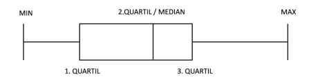
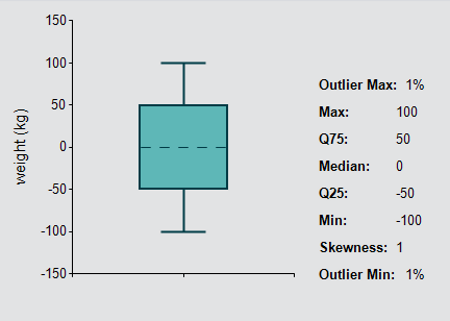

Wenn Sie sich einen Überblick über bestehende Daten verschaffen wollen, dann können Sie ein Boxplot-Diagramm verwenden. Ein Boxplot zeigt Ihnen, in welchem Bereich die Daten liegen und wie sie sich über diesen Bereich verteilen. Ein Boxplot besteht aus den folgenden Kenngrößen:
Abbildung: Boxplot

Zur Visualisierung des Boxplots bietet Ihnen der Siemens Industry Online Support ein .Net-Control, dass Sie in Verbindung mit WinCC Runtime Professional nutzen können. Di WinCC Controls finden Sie im UserFiles Ordner dieser Bibliothek.
Abbildung: .Net Control "Boxplot"

| LGF_Boxplot_DInt (FB) | ||||||||
|---|---|---|---|---|---|---|---|---|
| Bool | execute | error | Bool | |||||
| LReal | rangeOutlier | status | Word | |||||
| subfunctionStatus | Word | |||||||
| outlierMax | LReal | |||||||
| max | DInt | |||||||
| q75 | LReal | |||||||
| median | LReal | |||||||
| q25 | LReal | |||||||
| min | DInt | |||||||
| outlierMin | LReal | |||||||
| skewness | LReal | |||||||
| Array[*] of DInt | values | Array[*] of DInt | ||||||
| Bezeichner | Datentyp | Default Wert | Beschreibung |
|---|---|---|---|
| execute | Bool | FALSE | Aktivierung der Berechnung mit jeder positiven Flanke. |
| rangeOutlier | LReal | 1.5 | Ausreißer Erkennung: * 0: Ausreißer Erkennung ist deaktiviert * 0-1: Wert ist ungültig * >1: Ausreißer Erkennung ist aktiviert. |
| Bezeichner | Datentyp | Beschreibung |
|---|---|---|
| error | Bool | FALSE: Kein Fehler TRUE: Während der Ausführung des FB ist ein Fehler aufgetreten |
| status | Word | 16#0000-16#7FFF: Status des FB 16#8000-16#FFFF: Fehleridentifikation (siehe folgende Tabelle) |
| subfunctionStatus | Word | Status oder Rückgabewert von aufgerufenen FB's / FC's und Systemfunktionen |
| outlierMax | LReal | Obere Ausreißer in %. |
| max | DInt | Maximaler Wert, der kein Ausreißer ist. |
| q75 | LReal | 3.Quartil oder Q75 der Datenreihe. |
| median | LReal | 2.Quartil oder Median der Datenreihe. |
| q25 | LReal | 1.Quartil oder Q25 der Datenreihe. |
| min | DInt | Minimaler Wert, der kein Ausreißer ist. |
| outlierMin | LReal | Untere Ausreißer in %. |
| skewness | LReal | Schiefe der Datenreihe. |
| Bezeichner | Datentyp | Beschreibung |
|---|---|---|
| values | Array[*] of DInt | Das Array der Datenreihe, mit der gerechnet werden soll. |
| Code / Wert | Bezeichner / Beschreibung |
|---|---|
| 16#0000 | STATUS_EXECUTION_FINISHED Status: Abarbeitung ohne Fehler beendet |
| 16#7000 | STATUS_NO_CALL Status: Kein Aufruf. Der Baustein wartet auf die Aktivierung durch den Parameter `enable`. |
| 16#7001 | STATUS_FIRST_CALL Status: Erstaufruf des FB nach einschalten |
| 16#8200 | ERR_NEG_ARR_BOUND Fehler: Negative Array-Grenze nicht zulässig. Prüfen Sie das Array am Eingang `values`. |
| 16#8600 | ERR_SHELL_SORT Fehler: Fehler in Anweisung `LGF_ShellSort_DInt`. Weitere Infos in `subFunctionStatus` |
| 16#9101 | ERR_RANGE_NOT_OK Fehler: Der Parameter `rangeOutlier` ist ungültig. Geben Sie dem Parameter `rangeOutlier` einen gültigen Wert: * 0: Ausreißer Erkennung deaktiviert * >1 gültiger Wert. |
| Version & Datum | Änderungsbeschreibung | |
|---|---|---|
| 1.0.0 | Siemens Industry Online Support | |
| 23.11.2018 | First released version | |
| 1.0.1 | Simatic Systems Support | |
| 05.11.2019 | Code reworked, regions, comments and constants are added | |
| 3.0.0 | Simatic Systems Support | |
| 23.04.2020 | Set version to V3.0.0, harmonize the version of the whole library | |
| 3.0.1 | Simatic Systems Support | |
| 06.04.2021 | Insert documentation | |
| 3.0.2 | Simatic Systems Support | |
| 05.09.2024 | Fixed bug for array starting index | |
| 3.0.3 | Simatic Systems Support | |
| 16.07.2025 | Fixed comments and block info header | |